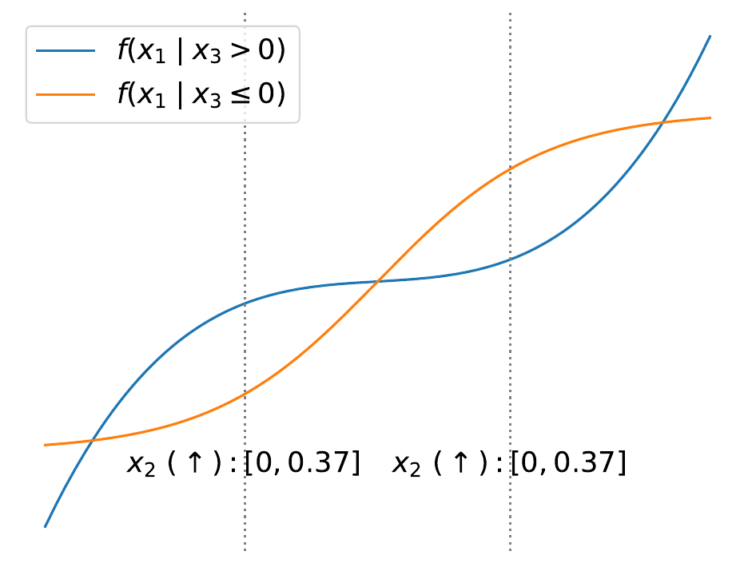
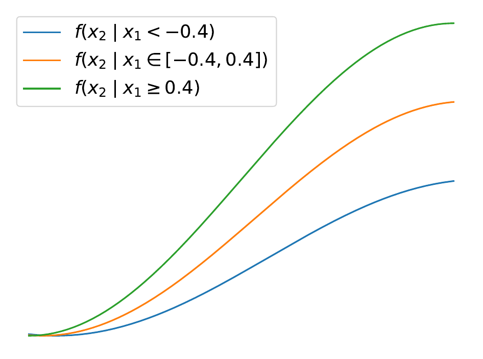
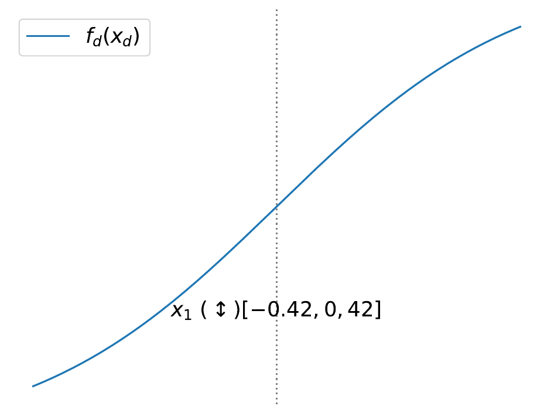

CALM: interpretable by design Interpretability-by-Design with Accurate Locally Additive Models and Conditional Feature Effects
Accurate locally additive models for tabular data. The interpretability of a GAM, the accuracy of a GA²M.



Abstract
Generalized additive models (GAMs) offer interpretability through independent univariate feature effects but underfit when interactions are present in data. GA²Ms add selected pairwise interactions, which improves accuracy but sacrifices interpretability and limits model auditing. We propose Conditionally Additive Local Models (CALMs), a new model class that balances the interpretability of GAMs with the accuracy of GA²Ms. CALMs allow multiple univariate shape functions per feature, each active in a different region of the input space. These regions are defined independently for each feature as simple logical conditions (thresholds) on the features it interacts with. As a result, effects remain locally additive while varying across subregions to capture interactions. We further propose a principled distillation-based training pipeline that identifies homogeneous regions with limited interactions and fits interpretable shape functions via region-aware backfitting. Experiments on diverse classification and regression tasks show that CALMs consistently outperform GAMs and achieve accuracy broadly comparable to GA²Ms, while preserving the univariate auditability that GA²Ms forfeit.
Use it
pip install calm-additivefrom calm_additive import CALMRegressor
model = CALMRegressor().fit(X_train, y_train)
y_hat = model.predict(X_test)
model.explain() # every feature: its regions and the shape function in each
model.plot("temperature") # one feature, one curve per regionThe package is being released in October 2026, built on effector. The API above is the target; this page updates with the first release.
Cite
@inproceedings{gkolemis2026calm,
title = {Interpretability-by-Design with Accurate Locally Additive Models
and Conditional Feature Effects},
author = {Gkolemis, Vasilis and Kavouras, Loukas and Kyriakopoulos, Dimitrios
and Tsopelas, Konstantinos and Rontogiannis, Dimitrios
and Casalicchio, Giuseppe and Dalamagas, Theodore and Diou, Christos},
booktitle = {Advances in Neural Information Processing Systems (NeurIPS)},
year = {2026}
}